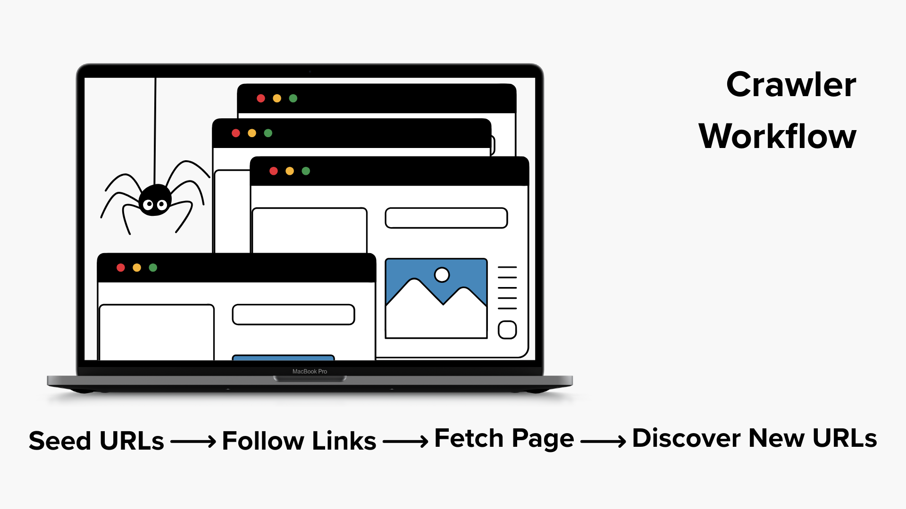

What is Crawling?
Crawling is the process search engines use to discover webpages across the internet. Special programs called web crawlers, or bots, explore the web by visiting known pages and following links to find new ones.
For example, Google's web crawler is called Googlebot. These bots move from page to page, collecting information and checking for updates so search engines can keep their results fresh and accurate.

How Crawlers Decide What to Visit
Search engines cannot crawl every page on the internet constantly, so they use algorithms to decide which pages should be visited and how often. Several factors influence this decision.
- How fast a website responds to requests
- How often the website updates its content
- Whether the site produces server errors
- The popularity or authority of the website
Search engines also use something called a crawl budget. This refers to the number of pages a search engine will crawl on a website within a certain time period. Sites that load quickly and provide useful content may receive a larger crawl budget.
Tools That Help Crawlers
Website owners can use tools like robots.txt files to give instructions to web crawlers about which pages to crawl or avoid. Additionally, sitemaps can be submitted to search engines to help them discover important pages on a website more efficiently.